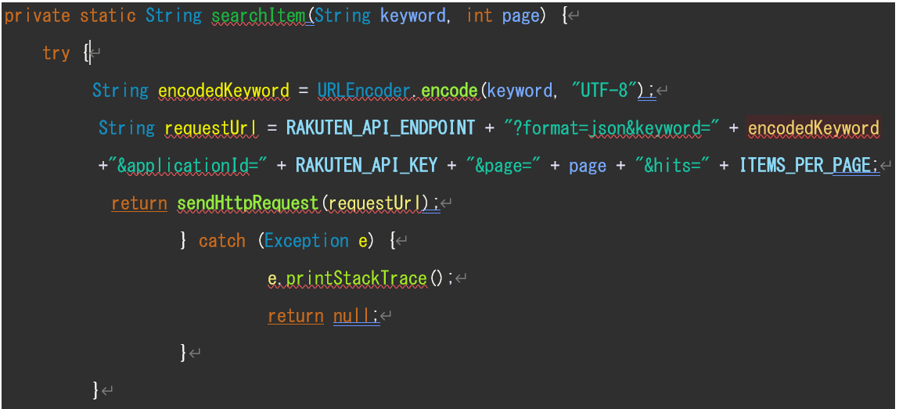
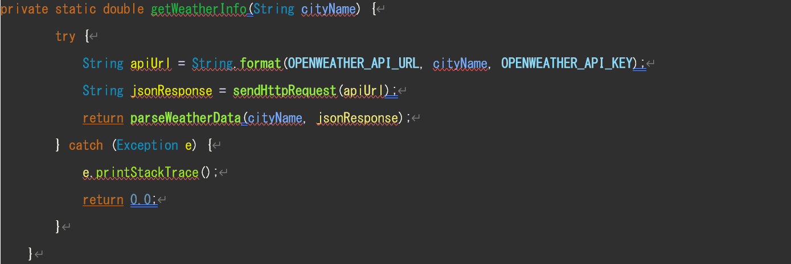
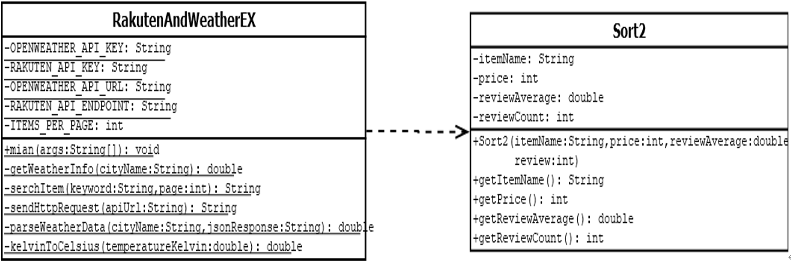

冬用の商品を買うのに何がいいのかどんな違いがあるのかいつも疑問に思う。
冬用の商品が気温に基づいてランキングされているととても便利だと感じたのでこのプログラムを作ろうと考えた。
また人によって予算が決まっていると思うので予算に合わせて表示するようなプログラムを作ろうと考えた。
楽天API:Webサービス
楽天の商品データや楽天のお買い物かごなどの機能を、開発者、企業の皆様にAPIを通じて提供するサイトである
Open Weather Map API:Webサービス
気象データの操作を容易にする、非常に認知度の高い気象製品を提供している
データ記述言語:Java
3.1 実装した機能
楽天APIを使い商品名、値段、評価、レビュー数を取得している。
レビュー数が極端に少ないものは信憑性が低いため排除している。
値段が極端に低いものを排除している。（自分で変えることは可能）
予算に合わせて表示するような機能を実装している。
Open Weather Map APIでは各都市の天気、気温を取得している。都市は使う人に合わせてプログラムを変更することが可能、今回は北海道、東京、大阪、福岡の天気、気温を取得し、表示するような機能を実装している。
この楽天APIとOpen Weather Map API の2つから取得した評価と気温を組み合わせて寒いところから順に評価の高い商品が５つ表示されるような機能を実装した。
今回はシュラフ（寝袋）を検索している。
3.2 システムが利用するリソース
名称：楽天API
概要：楽天市場の商品情報を提供するAPIである。商品名、価格、レビューなどの情報が含まれる。
利用目的：商品情報を取得し、予算内かつ一定条件を満たす商品を取得するために使用。
URL：https://webservice.rakuten.co.jp/
形式：Webサービス
リクエストパラメータ：

名称：Open Weather Map API
概要：天気の情報を提供するAPIである。気温や天候の情報が提供される。
利用目的：各都市の気温情報を取得し、Rakuten APIで取得した商品のランキングを調整するために使用。
URL：https://openweathermap.org/api
形式：Webサービス
リクエストパラメータ：

3.3 プログラムの構造

Rakuten And Weather EXクラスとSort2クラスを使用しおすすめ商品をランキング形式で表示させるプログラム
Rakuten And Weather EXクラス:
Rakuten And Weather EXは主なクラスである。
Open Weather APIを使用して都市ごとの気温情報を取得する。
気温情報を基に都市をランキングし、各都市に楽天市場から商品情報を取得し、評価と価格の条件に基づいてランキング表示。
Sort２クラス:
商品情報を格納するためのクラス。商品名、価格、評価平均、レビュー数の属性を持つ。
Rakuten And Weather EX と Sort2 は依存関係である。
3.4 工夫点:
気温に基づいて評価の高い商品（今回はシュラフ）のランキングを表示させている。極端にレビュー数が少ないものは信憑性に欠けるため10レビュー数より少ないものはランキングに入れないようにしている。これにより使う人にとってより適した商品が表示されるようになった。
3.5 その他工夫点:
自分で予算を決めることができる。
また下限の値段も自分で決めることができる。
検索する商品を自分で決められる（気温によって使用する商品が変わる物 ダウンなど）
読み込むページ数を自分で決めることができる（多くすればするほど時間がかかる）